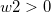
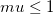
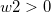
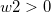

Voigt2DMod-FitFunc
パラメータとしてのvoigt曲面
数：7
名前: z0, A, xc, w1, yc, w2, mu
意味: z0 = z オフセット, A = 高さ, xc = x 中心, w1 = x 幅, yc = y 中心, w2 = y 幅, mu = プロファイル形要因
下側境界:, ,
上側境界: 
nlf_Voigt2DMod(x,y,z0,A,xc,w1,yc,w2,mu)
FITFUNC\VOIGT2DMod.FDF
![z=z0+A*\left[\frac{mu}{(1+((x-xc)/w1)^2)*(1+((y-yc)/w2)^2)}+(1-mu)*exp(-\frac{1}{2}*(\frac{x-xc}{w1})^2-\frac{1}{2}*(\frac{y-yc}{w2})^2)\right]](../images/Voigt2DMod/math-0a5d5795014f57475c8c835b395e0ff8.png "z=z0+A*\left[\frac{mu}{(1+((x-xc)/w1)^2)*(1+((y-yc)/w2)^2)}+(1-mu)*exp(-\frac{1}{2}*(\frac{x-xc}{w1})^2-\frac{1}{2}*(\frac{y-yc}{w2})^2)\right]")
 , ,
, ,